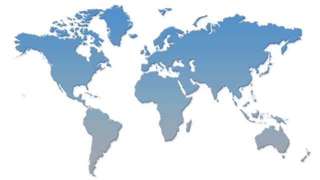
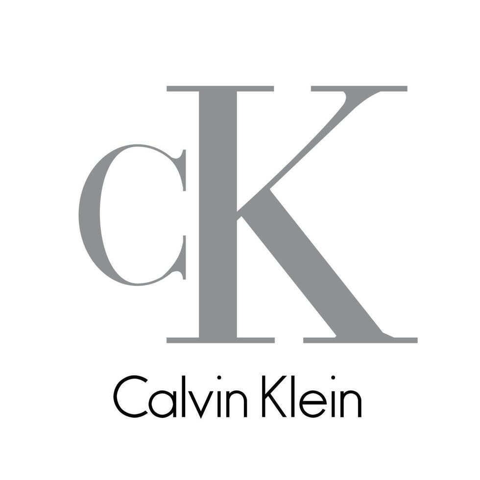
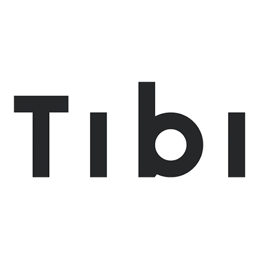
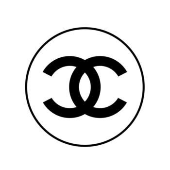
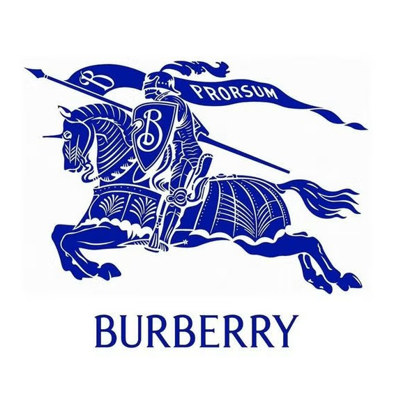
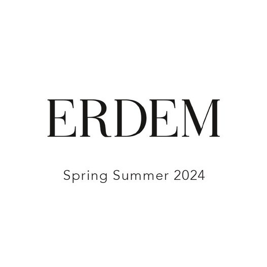
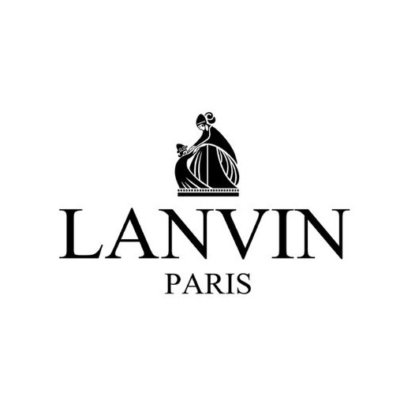
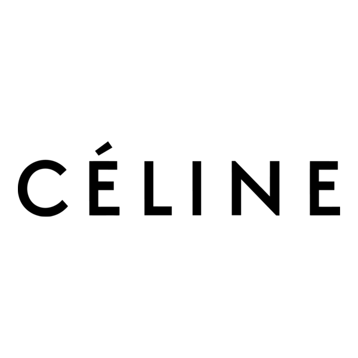

Featured News
Louis Vuitton Cruise 2026 在澳門燈光秀場驚艷全場
-Louis Vuitton Cruise 2026 在澳門 Londoner Arena 的走秀成為亞洲時尚新焦點，吸引大量媒體報導與專業買家目光。
Jakarta Fashion Week 2026 精彩回顧
-JFW 2026 上的東南亞設計力量集結傳統與創新，強化區域時尚在全球舞台的足跡。
亞洲設計師閃耀 London & Paris Fashion Weeks
-倫敦與巴黎時裝週上，包括亞洲設計師與明星的亮相，展示下季最受注目的潮流趨勢。
2026 Upcoming Show
CHANEL 2026 Métiers d’art 工坊大秀於紐約發佈 — CHANEL Shows
CHANEL 的城市跨界系列於紐約發表，Matthieu Blazy 的首次 Métiers d’art 工坊系列透過電影般的視角，呈現出一群性格鮮明的人物。裝飾藝術風格的華麗、突破工藝極限的優雅斜紋軟呢、精緻刺繡與奇幻的動物印花，整個系列在時間與空間中自由流轉。
2026 Métiers d’art 工坊系列 Matthieu Blazy 為 CHANEL 設計
Women's Spring-Summer 2026 Show I LOUIS VUITTON
Nicolas Ghesquière presented his Louis Vuitton Women’s Spring-Summer 2026 Collection live from Paris on Tuesday, September 30th at 12:00pm CEST.
Fashion Show Concept
全球有許多時裝週，但最具國際影響力的是四大時裝週：紐約、倫敦、米蘭、巴黎，每年舉辦兩次（春夏與秋冬），展示最新成衣系列，並有許多城市如東京、哥本哈根等也有自己的重要時裝週。這些時裝週是時尚界發布新趨勢、吸引設計師、買家、媒體與名人的重要活動，可細分為男裝週、女裝週、高級訂製服裝週，以及針對不同季節的早春/早秋系列。
四大國際時裝週（Big Four）
- 紐約時裝週：歷史最悠久，偏向都會休閒風格。
- 倫敦時裝週：以創意、前衛、標新立異的設計著稱。
- 米蘭時裝週：強調精緻、新奇、奢華，是全球時尚指標。
- 巴黎時裝週：最華麗，匯集頂級品牌，是時尚界最受矚目的盛事。
時裝週的分類
- 依季節：春夏（9-10月）、秋冬（2-3月）。
- 依系列：成衣（Ready-to-wear）、高級訂製（Haute Couture）、男裝。
- 依系列種類：早春（Cruise）、早秋（Pre-Fall）。
Designers / Brands
NewYork Fashion Show's Main Brands
 Milan Fashion Show's Main Brands
London Fashion Show's Main Brands
 Paris Fashion Show's Main Brands
 CONTACT
- Show Inquiries
- Event Coordination
- events@brandname.com